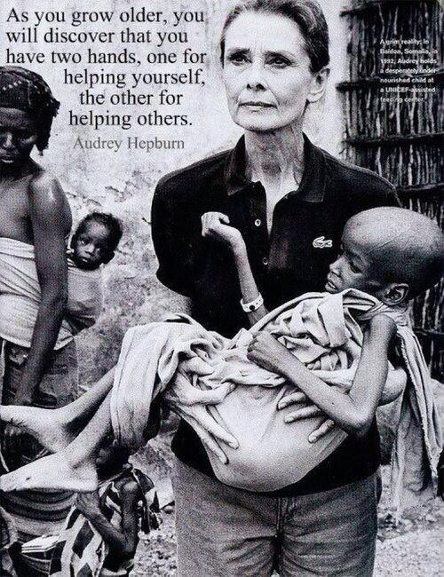

Unending Love, Audrey Hepburn’s Favorite Poem by Rabindranath Tagore
Contents


Audrey Hepburn’s Favorite Poem
As Google celebrates Audrey Hepburn’s1 birthday with this lovely doodle2, it’s worth re-reading one of her favorite poems by Rabindranath Tagore 3, Unending Love.
It’s a lovely little piece where Tagore subtly immerses the reader in experiences of love.
Clad in the light of a pole-star piercing the darkness of time: You become an image of what is remembered forever.
We are taken back and forth across time, which if you ask me, makes the piece feel even more ethereal.
Today it is heaped at your feet, it has found its end in you The love of all man’s days both past and forever:
The Full Poem
Here’s the full poem, translated from the original Bengali by William Radice4. William was an English poet who spent decades with Tagore, developing a deep understanding of his work, and honed techniques for translation into English which retained the power of the original prose.
Unending Love I seem to have loved you in numberless forms, numberless times… In life after life, in age after age, forever. My spellbound heart has made and remade the necklace of songs, That you take as a gift, wear round your neck in your many forms, In life after life, in age after age, forever. Whenever I hear old chronicles of love, its age-old pain, Its ancient tale of being apart or together. As I stare on and on into the past, in the end you emerge, Clad in the light of a pole-star piercing the darkness of time: You become an image of what is remembered forever. You and I have floated here on the stream that brings from the fount. At the heart of time, love of one for another. We have played along side millions of lovers, shared in the same Shy sweetness of meeting, the same distressful tears of farewell- Old love but in shapes that renew and renew forever. Today it is heaped at your feet, it has found its end in you The love of all man’s days both past and forever: Universal joy, universal sorrow, universal life. The memories of all loves merging with this one love of ours – And the songs of every poet past and forever. - Rabindranath Tagore
Gregory Peck reads Unending Love
Audrey the Humanitarian
“As you grow older, you will discover that you have two hands, one for helping yourself, the other for helping others.”
- Audrey Hepburn

Ma Belle
On a more personal note, I’ll always remember this day since it’s also my dog, my constant companion, Ma Belle’s birthday. She turns six today! And in so many ways, she is Hepburn-eque, with all the grace, poise, and regal bearing that that Audrey was much loved for.